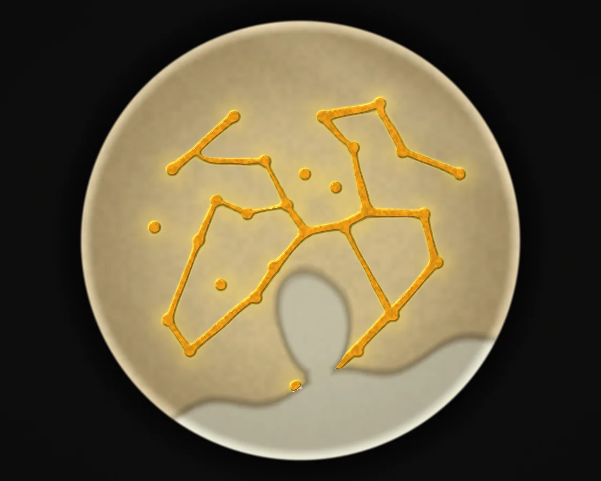

Slime mould maps Tokyo
Slime mould maps Tokyo is a WebGL effect: sense, turn, step, deposit: agents carve self-reinforcing trail networks. One plain JavaScript file with no dependencies; add it with npx motion-library add physarum.

Open it live, tune it and copy the code
What is Slime mould maps Tokyo?
A slime mould grows a network between the cities around Tokyo, tightening into trunk lines.
How does Slime mould maps Tokyo work?
Each agent senses trail ahead-left, ahead and ahead-right, turns toward the strongest and deposits more; the trail diffuses and decays, so only used routes survive.
How do I add Slime mould maps Tokyo to my website?
- In your project folder, run
npx motion-library add physarum. It writesanimations/physarum.js. Needs Node 18 or newer. - Import it and call it with a container element that has a size:
import fx from './animations/physarum.js'; const stop = fx(document.querySelector('#hero')); - Call
stop()to clean up, for example when a component unmounts.
Every setting below is also a flag, so you can install it already tuned: npx motion-library add physarum --agents 768.
What settings can I tweak?
| Setting | Flag | Default | Range | Step |
|---|---|---|---|---|
| Grid (agents = grid²) | --agents | 384 | 128 to 768 | 64 |
| Sensor angle | --sensor | 0.39 | 0.15 to 1 | 0.01 |
| Trail decay | --decay | 0.9 | 0.8 to 0.98 | 0.005 |
Specifications
- Renderer
- WebGL
- Category
- Flow & particles
- Dependencies
- None
- File size
- 12.4 KB, unminified
- Interactive
- No: it plays on its own
- Reduced motion
- Plays the same for everyone
- Licence
- MIT-0: use it anywhere, no credit needed
Source code
// Slime mould maps Tokyo: a quarter of a million agents on the GPU, each one sensing a chemical trail ahead-left,
// ahead and ahead-right, turning toward the strongest, stepping forward and laying down more trail. That one rule is
// how the real Physarum polycephalum forages. In 2010 researchers put oat flakes where the cities around Tokyo are
// and the mould grew a network much like the rail system. Here the flakes leak food into the trail map, light (the
// bay) is avoided, and the network tightens from a fine mesh into trunk lines between the cities. The trail is
// rendered as a wet height field, so the veins catch the light.
const PARAMS = { agents: 384, sensor: 0.39, decay: 0.9 };
export default function (stage) {
const canvas = document.createElement('canvas');
canvas.style.cssText = 'position:absolute;inset:0;width:100%;height:100%;display:block';
stage.append(canvas);
const gl = canvas.getContext('webgl2', { antialias: false });
if (!gl || !gl.getExtension('EXT_color_buffer_float')) { stage.textContent = 'This needs WebGL2 with float render targets.'; return () => canvas.remove(); }
const G = Math.max(64, Math.round(PARAMS.agents)), COUNT = G * G, M = 768; // agents = G², trail map M×M over the dish
// oat flakes: Tokyo in the middle and the towns around it, in dish coordinates (-1..1, y up)
const CITIES = [[0.02, 0.04], [-0.12, -0.12], [-0.2, -0.26], [0.2, 0.06], [0.3, 0.14], [0.02, 0.3], [-0.16, 0.36], [-0.38, 0.18], [-0.46, 0.0],
[-0.36, -0.2], [-0.6, -0.36], [0.24, 0.42], [0.46, 0.4], [0.56, 0.12], [0.62, -0.1], [0.1, 0.56], [-0.3, 0.56], [-0.58, 0.32], [-0.66, 0.06],
[0.36, 0.62], [0.72, 0.3], [-0.06, 0.16], [-0.24, 0.12], [0.16, 0.24], [-0.5, -0.5], [0.42, -0.34], [0.26, -0.5], [-0.02, -0.66]];
// the bay and the open sea: lit in the real experiment, which the mould avoids
const SEA = `
float sea(vec2 p) { // > 0 in the water
float bay = .2 - length((p - vec2(.06, -.36)) * vec2(1.25, .85)) + .03 * sin(p.x * 13.) * sin(p.y * 9.);
float mouth = min(.07 - abs(p.x - .08 + .12 * (p.y + .5)), -.46 - p.y); // the bay opens south to the ocean
float ocean = -.66 - p.y + .25 * p.x + .04 * sin(p.x * 11.);
return max(max(bay, ocean), mouth);
}`;
const QUAD = `#version 300 es
in vec2 p; out vec2 uv; void main() { uv = p * .5 + .5; gl_Position = vec4(p, 0, 1); }`;
// the agents: sense, turn, step
const agentFS = `#version 300 es
precision highp float; in vec2 uv; out vec4 o; uniform sampler2D A, TR; uniform float F, SA, SD;
${SEA}
float h(vec2 p) { return fract(sin(dot(p, vec2(127.1, 311.7))) * 43758.5453); }
float sense(vec2 p, float a) { return texture(TR, p + vec2(cos(a), sin(a)) * SD / ${M}.).r; }
void main() {
vec4 s = texture(A, uv); vec2 p = s.xy; float a = s.z;
float l = sense(p, a + SA), c = sense(p, a), r = sense(p, a - SA), rnd = h(uv * 917. + F);
float RA = .78; // turn twice the sensor angle: Jones's network regime
if (c > l && c > r) {} else if (c < l && c < r) a += (rnd < .5 ? 1. : -1.) * RA; else if (l > r) a += RA; else if (r > l) a -= RA;
vec2 q = p + vec2(cos(a), sin(a)) * 1.05 / ${M}.;
vec2 d = q * 2. - 1.;
if (length(d) > .97 || sea(d) > 0.) { a = h(uv * 31. + F) * 6.2832; q = p; } // hit the dish wall or the light: turn away
o = vec4(q, a, 1);
}`;
// deposit: every agent adds a little chemical where it stands
const depVS = `#version 300 es
uniform sampler2D A; uniform int G;
void main() { vec2 p = texelFetch(A, ivec2(gl_VertexID % G, gl_VertexID / G), 0).xy; gl_Position = vec4(p * 2. - 1., 0, 1); gl_PointSize = 1.; }`;
const depFS = `#version 300 es
precision mediump float; out vec4 o; void main() { o = vec4(.18, 0, 0, 0); }`;
// the trail map: blur, fade, keep the food sources topped up, nothing survives in the light
const trailFS = `#version 300 es
precision highp float; in vec2 uv; out vec4 o; uniform sampler2D TR; uniform float DEC; uniform vec2 C[${CITIES.length}];
${SEA}
void main() {
vec2 e = vec2(1. / ${M}.); float s = 0.;
for (int y = -1; y <= 1; y++) for (int x = -1; x <= 1; x++) s += texture(TR, uv + vec2(x, y) * e).r;
float v = s / 9. * DEC;
vec2 d = uv * 2. - 1.;
for (int i = 0; i < ${CITIES.length}; i++) { float l = length(d - C[i]); v += 1.6 * smoothstep(.024, .008, l) + .045 * smoothstep(.16, .0, l); } // a strong source and a faint halo agents can find // the flakes feed the network
if (sea(d) > 0. || length(d) > .98) v = 0.;
o = vec4(min(v, 40.), 0, 0, 1);
}`;
// the picture: agar in a glass dish on a dark table; the trail as a wet yellow height field with highlights
const showFS = `#version 300 es
precision highp float; in vec2 uv; out vec4 o; uniform sampler2D TR; uniform vec2 R; uniform vec2 C[${CITIES.length}]; uniform float T;
${SEA}
float h(vec2 p) { return fract(sin(dot(p, vec2(127.1, 311.7))) * 43758.5453); }
float n2(vec2 p) { vec2 i = floor(p), f = fract(p); f = f * f * (3. - 2. * f); return mix(mix(h(i), h(i + vec2(1, 0)), f.x), mix(h(i + vec2(0, 1)), h(i + 1.), f.x), f.y); }
float slime(vec2 t) { return smoothstep(.15, 2.6, texture(TR, t).r); }
void main() {
float s = min(R.x, R.y);
vec2 p = (uv * R - R * .5) / (s * .46); // dish coordinates
float rr = length(p);
vec3 col = vec3(.075, .07, .068) * (1. - .35 * length(uv - .5)) * (.92 + .08 * n2(uv * R / 3.)); // the table
col *= 1. - .55 * smoothstep(1.16, .98, rr) * smoothstep(.9, 1.02, rr); // the dish's shadow
if (rr < 1.) {
vec2 t = p * .5 + .5, e = vec2(1.5 / ${M}.);
float hgt = slime(t);
vec2 g = vec2(slime(t + vec2(e.x, 0)) - slime(t - vec2(e.x, 0)), slime(t + vec2(0, e.y)) - slime(t - vec2(0, e.y)));
vec3 N = normalize(vec3(-g * 2.6, 1.));
vec3 L = normalize(vec3(-.5, .6, .8)), H = normalize(L + vec3(0, 0, 1));
// agar: a pale amber gel, slightly darker toward the rim, the lit sea a little cooler
vec3 agar = mix(vec3(.82, .74, .55), vec3(.66, .58, .42), smoothstep(.4, 1., rr)) * (.95 + .05 * n2(p * 40.));
float w = sea(p);
agar = mix(agar, vec3(.74, .76, .72), smoothstep(-.01, .03, w) * .6);
agar *= 1. - .25 * smoothstep(.04, -.01, abs(w)) * step(-.03, w); // a faint coastline
vec3 c = agar;
// oat flakes, under the mould
for (int i = 0; i < ${CITIES.length}; i++) {
vec2 q = p - C[i]; float a = atan(q.y, q.x), rad = .022 + .006 * sin(a * 3. + float(i)) + .004 * sin(a * 7. + float(i) * 2.);
float f = smoothstep(rad, rad - .006, length(q));
c = mix(c, vec3(.93, .87, .72) * (.85 + .3 * n2(q * 200.)), f);
}
// the mould: thin film is pale, thick veins saturate to deep yellow-orange
float raw = texture(TR, t).r;
c = mix(c, vec3(.96, .84, .4), smoothstep(.03, .6, raw) * .45); // the thin film between the veins
vec3 sl = mix(vec3(.98, .86, .3), vec3(.93, .62, .1), smoothstep(.55, 1., hgt));
sl *= .9 + .2 * n2(p * 90. + vec2(T * .7, -T * .4)); // grainy cytoplasm streaming through the tubes
c = mix(c, sl * (.6 + .5 * max(dot(N, L), 0.)), smoothstep(.03, .35, hgt));
c += vec3(1., .97, .85) * pow(max(dot(N, H), 0.), 60.) * .55 * smoothstep(.2, .6, hgt); // wet highlights
// the glass: a bright rim and a soft reflection across the lid
c += vec3(.9, .95, 1.) * (smoothstep(.93, .99, rr) * .25 + smoothstep(.2, .0, abs(p.x * .6 + p.y - .9)) * .05);
col = mix(col, c, smoothstep(1., .985, rr));
}
o = vec4(pow(col, vec3(1.05)), 1);
}`;
const sh = (type, src) => { const s = gl.createShader(type); gl.shaderSource(s, src); gl.compileShader(s); if (!gl.getShaderParameter(s, gl.COMPILE_STATUS)) throw new Error(gl.getShaderInfoLog(s)); return s; };
const prog = (vs, fs) => {
const p = gl.createProgram(); gl.attachShader(p, sh(gl.VERTEX_SHADER, vs)); gl.attachShader(p, sh(gl.FRAGMENT_SHADER, fs)); gl.bindAttribLocation(p, 0, 'p'); gl.linkProgram(p);
if (!gl.getProgramParameter(p, gl.LINK_STATUS)) throw new Error(gl.getProgramInfoLog(p));
const u = {}; for (let i = 0, n = gl.getProgramParameter(p, gl.ACTIVE_UNIFORMS); i < n; i++) { const nm = gl.getActiveUniform(p, i).name.replace('[0]', ''); u[nm] = gl.getUniformLocation(p, nm); }
return { p, u };
};
const agentP = prog(QUAD, agentFS), depP = prog(depVS, depFS), trailP = prog(QUAD, trailFS), showP = prog(QUAD, showFS);
const quad = gl.createVertexArray(); gl.bindVertexArray(quad);
gl.bindBuffer(gl.ARRAY_BUFFER, gl.createBuffer()); gl.bufferData(gl.ARRAY_BUFFER, new Float32Array([-1, -1, 3, -1, -1, 3]), gl.STATIC_DRAW);
gl.enableVertexAttribArray(0); gl.vertexAttribPointer(0, 2, gl.FLOAT, false, 0, 0);
const empty = gl.createVertexArray();
const target = (w, h, ifmt, type, filt, data = null) => {
const t = gl.createTexture(); gl.bindTexture(gl.TEXTURE_2D, t); gl.texImage2D(gl.TEXTURE_2D, 0, ifmt, w, h, 0, gl.RGBA, type, data);
gl.texParameteri(gl.TEXTURE_2D, gl.TEXTURE_MIN_FILTER, filt); gl.texParameteri(gl.TEXTURE_2D, gl.TEXTURE_MAG_FILTER, filt);
gl.texParameteri(gl.TEXTURE_2D, gl.TEXTURE_WRAP_S, gl.CLAMP_TO_EDGE); gl.texParameteri(gl.TEXTURE_2D, gl.TEXTURE_WRAP_T, gl.CLAMP_TO_EDGE);
const fb = gl.createFramebuffer(); gl.bindFramebuffer(gl.FRAMEBUFFER, fb); gl.framebufferTexture2D(gl.FRAMEBUFFER, gl.COLOR_ATTACHMENT0, gl.TEXTURE_2D, t, 0);
return { t, fb };
};
// agents start spread over the land in the dish, pointing every which way
const init = new Float32Array(COUNT * 4);
for (let i = 0; i < COUNT; i++) {
let x, y; do { const a = Math.random() * 6.283, r = Math.sqrt(Math.random()) * 0.95; x = Math.cos(a) * r; y = Math.sin(a) * r; } while (y < -0.62 + 0.25 * x || Math.hypot((x - 0.06) * 1.25, (y + 0.36) * 0.85) < 0.2);
init.set([x * 0.5 + 0.5, y * 0.5 + 0.5, Math.random() * 6.283, 1], i * 4);
}
let A = target(G, G, gl.RGBA32F, gl.FLOAT, gl.NEAREST, init), B = target(G, G, gl.RGBA32F, gl.FLOAT, gl.NEAREST, init);
let TA = target(M, M, gl.RGBA16F, gl.HALF_FLOAT, gl.LINEAR), TB = target(M, M, gl.RGBA16F, gl.HALF_FLOAT, gl.LINEAR);
const cityArr = new Float32Array(CITIES.flat());
let W = 1, H = 1;
const resize = () => { const d = Math.min(devicePixelRatio, 2); W = canvas.width = Math.max(1, (stage.clientWidth * d) | 0); H = canvas.height = Math.max(1, (stage.clientHeight * d) | 0); };
const ro = new ResizeObserver(resize); ro.observe(stage); resize();
let raf, frameNo = 0, t0 = performance.now();
function frame(now) {
frameNo++;
gl.bindVertexArray(quad);
for (let s = 0; s < 2; s++) {
// move the agents
gl.disable(gl.BLEND); gl.useProgram(agentP.p); gl.bindFramebuffer(gl.FRAMEBUFFER, B.fb); gl.viewport(0, 0, G, G);
gl.activeTexture(gl.TEXTURE0); gl.bindTexture(gl.TEXTURE_2D, A.t); gl.activeTexture(gl.TEXTURE1); gl.bindTexture(gl.TEXTURE_2D, TA.t);
gl.uniform1i(agentP.u.A, 0); gl.uniform1i(agentP.u.TR, 1); gl.uniform1f(agentP.u.F, (frameNo * 2 + s) % 1000); gl.uniform1f(agentP.u.SA, PARAMS.sensor); gl.uniform1f(agentP.u.SD, 9);
gl.bindVertexArray(quad); gl.drawArrays(gl.TRIANGLES, 0, 3); [A, B] = [B, A];
// they deposit into the trail
gl.enable(gl.BLEND); gl.blendFunc(gl.ONE, gl.ONE); gl.useProgram(depP.p); gl.bindFramebuffer(gl.FRAMEBUFFER, TA.fb); gl.viewport(0, 0, M, M);
gl.activeTexture(gl.TEXTURE0); gl.bindTexture(gl.TEXTURE_2D, A.t); gl.uniform1i(depP.u.A, 0); gl.uniform1i(depP.u.G, G);
gl.bindVertexArray(empty); gl.drawArrays(gl.POINTS, 0, COUNT); gl.disable(gl.BLEND);
// and the trail spreads and fades
gl.useProgram(trailP.p); gl.bindFramebuffer(gl.FRAMEBUFFER, TB.fb); gl.activeTexture(gl.TEXTURE0); gl.bindTexture(gl.TEXTURE_2D, TA.t);
gl.uniform1i(trailP.u.TR, 0); gl.uniform1f(trailP.u.DEC, PARAMS.decay); gl.uniform2fv(trailP.u.C, cityArr);
gl.bindVertexArray(quad); gl.drawArrays(gl.TRIANGLES, 0, 3); [TA, TB] = [TB, TA];
}
gl.useProgram(showP.p); gl.bindFramebuffer(gl.FRAMEBUFFER, null); gl.viewport(0, 0, W, H);
gl.activeTexture(gl.TEXTURE0); gl.bindTexture(gl.TEXTURE_2D, TA.t); gl.uniform1i(showP.u.TR, 0); gl.uniform2f(showP.u.R, W, H);
gl.uniform2fv(showP.u.C, cityArr); gl.uniform1f(showP.u.T, (now - t0) / 1000);
gl.drawArrays(gl.TRIANGLES, 0, 3);
raf = requestAnimationFrame(frame);
}
raf = requestAnimationFrame(frame);
return () => { cancelAnimationFrame(raf); ro.disconnect(); gl.getExtension('WEBGL_lose_context')?.loseContext(); canvas.remove(); };
}